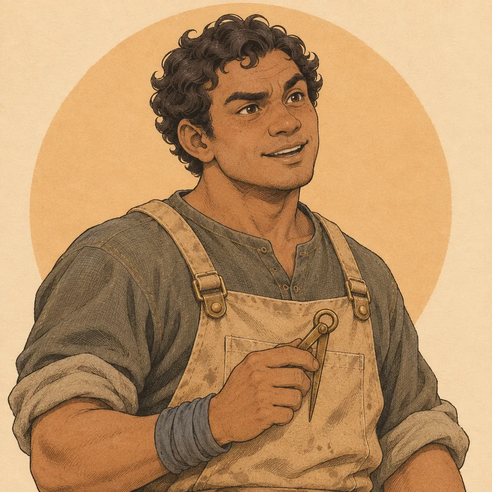
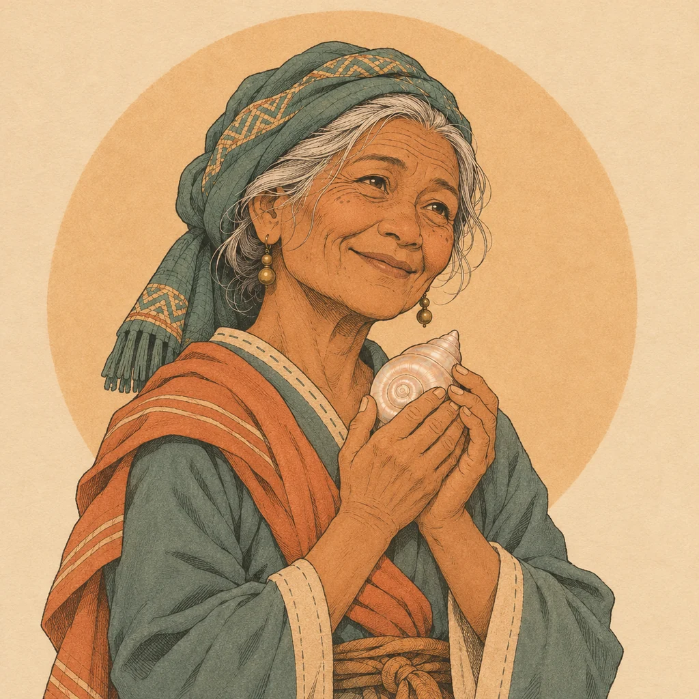
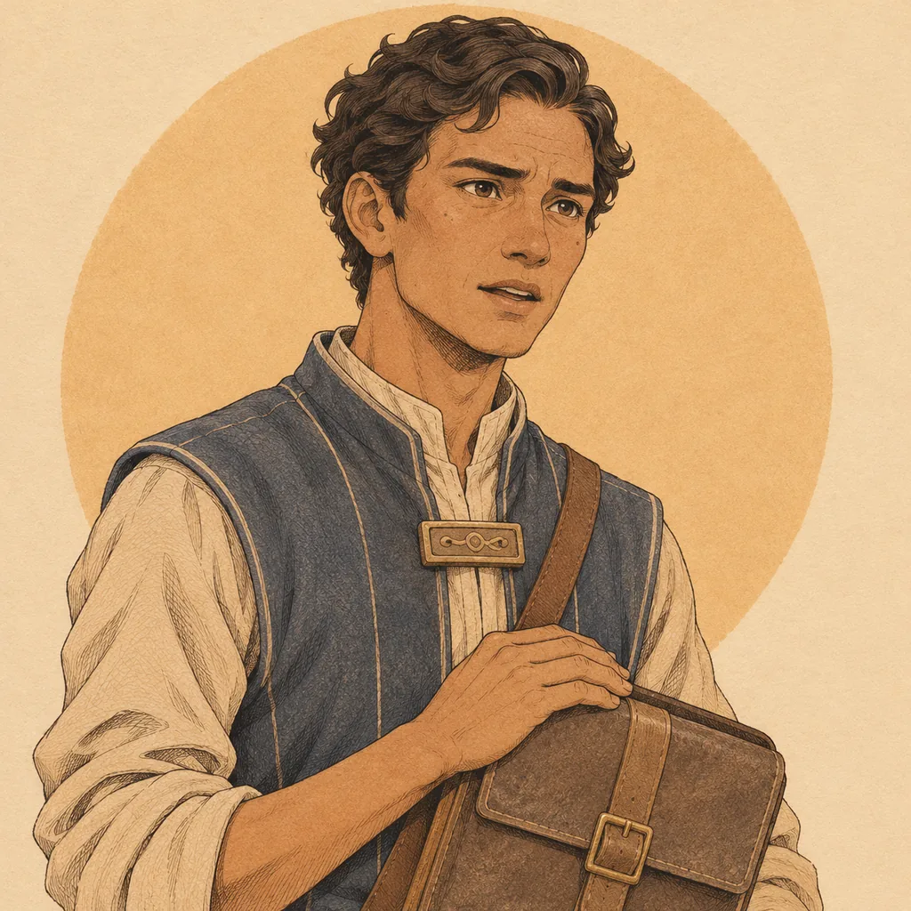
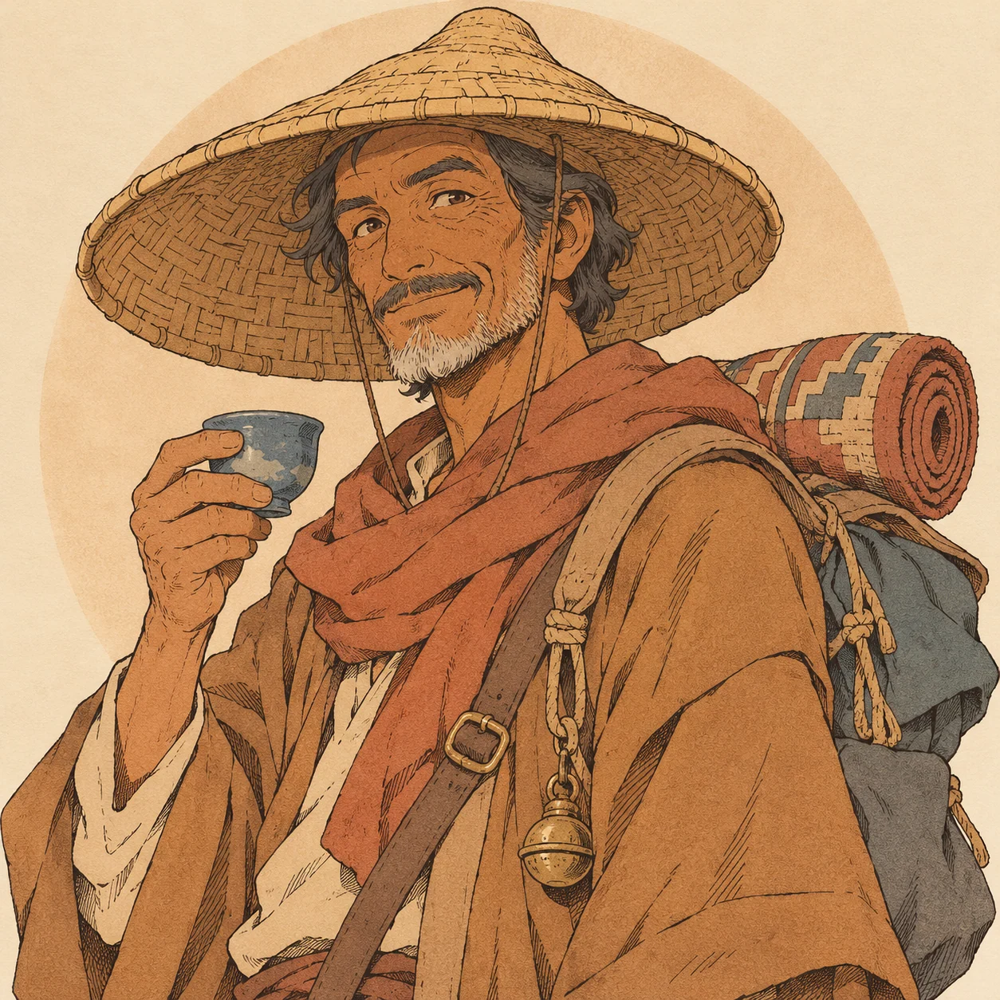
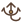
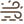

Satu bahasa visual: tinta sepia, bidang warna tenang, dan kuning lentera sebagai penanda kehangatan. Portrait dipakai untuk dialog dan Buku Jalur; ikon untuk perlengkapan, peta, medan, cuaca, dan antarmuka.





Kait tali
Badai pasir7 portrait WebP · 24 ikon SVG · semua aset tersimpan lokal tanpa dependensi jaringan.